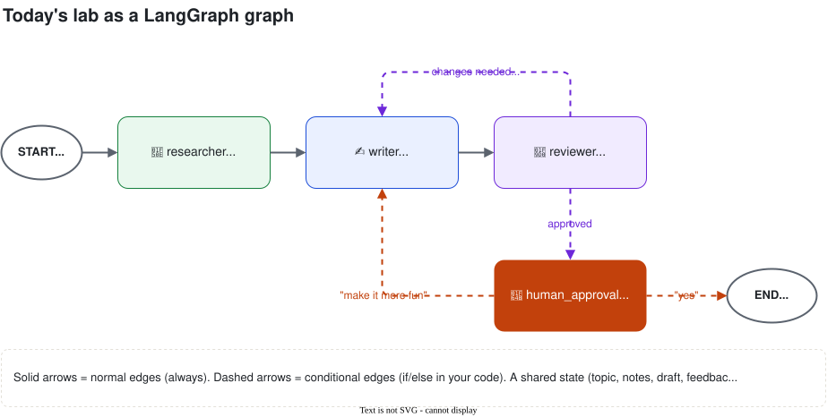

GenAI & Agentic AI Workshop · Day 2 · Session 8
Agent Frameworks & Multi-Agent Systems
From one agent to a team, with you as the editor-in-chief
Press → to move · S for speaker notes · F for full screen
Our Session 7 agent: ~25 lines 🎉
But what if it must...
- ⏸️ pause for approval, and resume tomorrow?
- 🔁 retry when a tool fails?
- 🧑🤝🧑 work as a team of specialist agents?
- 🔍 show you what happened when it goes wrong?
That's what frameworks are for.
What a framework gives you

The main options
| Framework | Think of it as... | Good for |
|---|---|---|
| LangGraph | A graph of nodes + edges with shared state | Control, loops, pauses, production |
| CrewAI | A crew of role-playing agents doing tasks | Quick prototypes |
| OpenAI Agents SDK | Lightweight agents + handoffs | Simple multi-agent apps |
| Claude Agent SDK | The harness behind Claude Code | Agents working with files and code |
| Google ADK | Gemini-first agent kit | Gemini / Google Cloud |
| Microsoft Agent Framework | AutoGen + Semantic Kernel successor | Azure / .NET |
Same core ideas everywhere: LLM + tools (often MCP) + loop + memory. Pick by model, cloud and control.
Why a team of agents? 🧑🤝🧑
Like a college fest: sponsorship, design and logistics teams, not one person doing everything.
🎯 Focus
Short prompt, only the tools it needs
🧐 Quality checks
One agent reviews another
⚡ Parallel work
Research several things at once
📦 Smaller context
Each sees only what it needs
Four patterns

🙋 Human-in-the-loop
| Kind | Example |
|---|---|
| Approve / reject | "Book room S3 on Sunday 10–12?" |
| Edit | Fix the title before publishing |
| Feedback | "Make it more fun" → back to the writer |
| Review the plan | Check 5 steps before anything runs |
| Answer a question | "3rd- or 5th-semester syllabus?" |
LangGraph: interrupt() pauses · checkpointer saves state · Command(resume=...) continues
When not to use a team
💸 ~15× the tokens
Anthropic's multi-agent research system vs a normal chat
🤷 Coordination errors
Agents misunderstand, repeat, pass mistakes on
🐞 Harder to debug
More parts, different path each run
🔗 Tightly linked steps
One agent beats several passing notes
Start with one agent. Split for a clear reason.
Today's lab as a graph

LangGraph: state, nodes, edges
graph = StateGraph(TeamState) # shared state
graph.add_node("researcher", researcher) # nodes = plain functions
graph.add_node("writer", writer)
graph.add_node("reviewer", reviewer)
graph.add_node("human_approval", human_approval)
graph.add_edge(START, "researcher") # always
graph.add_edge("researcher", "writer")
graph.add_edge("writer", "reviewer")
graph.add_conditional_edges("reviewer", after_review, ["writer", "human_approval"]) # if/else
graph.add_conditional_edges("human_approval", after_human, ["writer", END])
app = graph.compile(checkpointer=InMemorySaver()) # pause / resume / historyPausing for a human
def human_approval(state):
answer = interrupt({"draft": state["draft"]}) # ⏸️ pause here
if answer.lower() in ("yes", "y"):
return {"approved": True}
return {"approved": False, "feedback": answer} # back to the writer
# later...
app.invoke(Command(resume="make it more fun"), config) # ▶️ continueThe reviewer uses structured output (approved: bool) so the graph can branch on it.
Same idea in CrewAI (sketch)
researcher = Agent(role="Researcher", goal="Find accurate facts about {topic}", backstory="...")
writer = Agent(role="Writer", goal="Write a 200-word article for first-years", backstory="...")
research = Task(description="Research {topic}...", expected_output="Notes with URLs", agent=researcher)
write = Task(description="Write the article...", expected_output="~200 words", agent=writer,
context=[research])
Crew(agents=[researcher, writer], tasks=[research, write], process=Process.sequential).kickoff(
inputs={"topic": "Chandrayaan-3"})Shorter. LangGraph: more code, but explicit loops, branches, pauses and state.
Lab: your research team (35 min) 🧪
- Real
search_wikipediatool (free, no key) - Three agents as plain functions
- Run as a simple Python pipeline
- Same functions → LangGraph with review loop + human pause
- You are the editor-in-chief: ask for changes, then approve
- Look inside the saved state
Wikipedia busy? The tool retries and has backup facts for the example topic.
Recap
- Frameworks = loop + state + memory + pauses + tracing
- LangGraph (control) · CrewAI (quick) · SDKs (lighter)
- Teams: focus, quality checks, parallel work
- Pipeline · orchestrator–workers · planner–executor · reviewer loop
- Human-in-the-loop: pause, approve, resume
- ~15× tokens: start with one agent
Quick quiz 🧠
- "Compare 5 companies": which pattern? Orchestrator–workers
- What does a reviewer agent add? A quality check with feedback
- How does LangGraph pause for a human? interrupt() + checkpointer
- One reason not to use a team? Cost / errors / debugging
Up next · Session 9
Taking Agents to Production
Evaluation, tracing, cost and latency, safety, and deploying as an API
Questions? 🙋